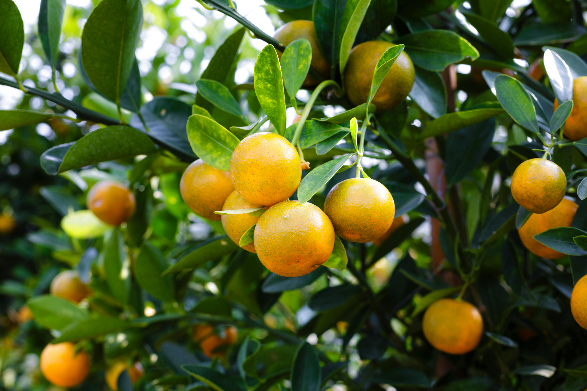
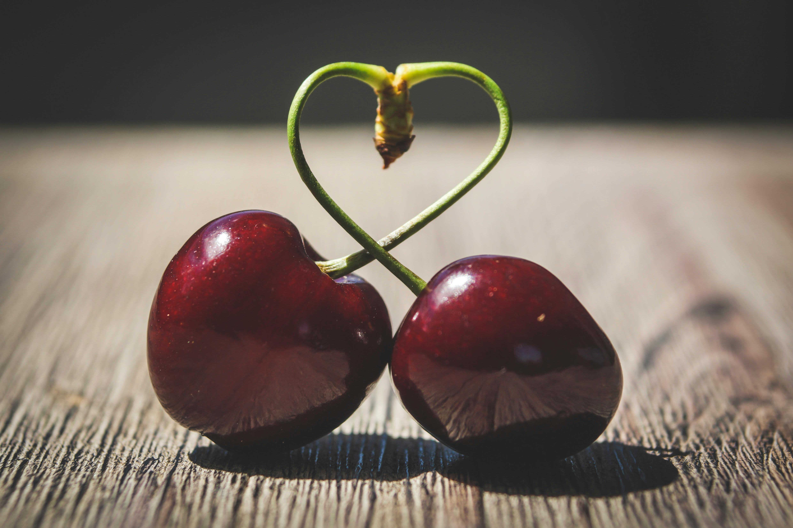
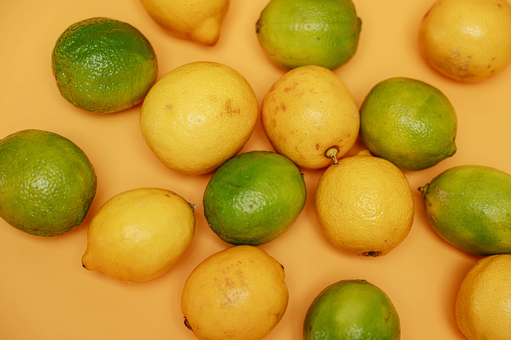

-

Oranges
A fun fact about oranges is that no other
English word rhymes with orange. Well, not a
well-known word anyway. There is a mountain
range in Wales, Blorenge, that rhymes with
orange!
Source:
https://www.coolkidfacts.com/facts-about-oranges/
-

Cherry
Thanks to the introduction of mechanical
tree shakers, the laborious process of
hand-picking cherries now takes a mere seven
seconds per tree. Efficiency has its price,
though. Because the machine is so intense,
it shortens a tree’s life by seven years.
Source:
https://www.tasteofhome.com/article/10-absolutely-delightful-facts-about-cherries/
-
Ginger
The word “ginger” comes from the Sanskrit
word “srngaveram,” which means “horn root”
because of its shape.
Source: https://mentalbomb.com/ginger-facts/
-
Various Roots
Root beer is a sweet North American soft
drink traditionally made using the root bark
of the sassafras tree Sassafras albidum or
the vine of Smilax ornata as the primary
flavor.
Source:
https://www.factsnippet.com/site/facts-about-root-beer.html
-

Lemon-Lime
Today, the British Navy requires all ships
to carry enough lemons so that every sailor
can have an ounce of juice a day.
Source:
https://www.thefactsite.com/juicy-lemon-facts/


.svg)